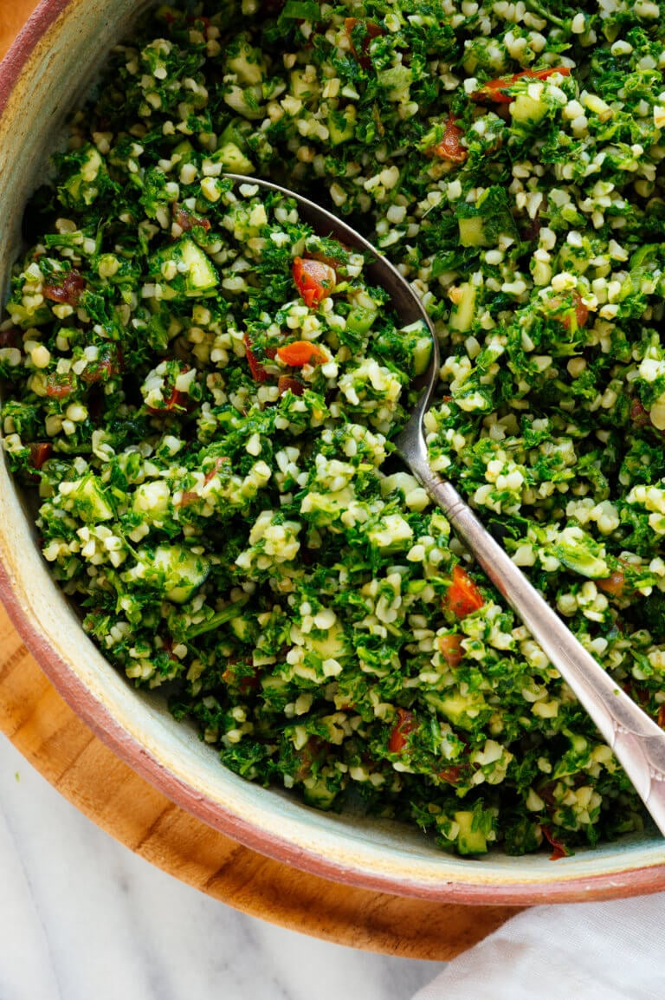

Super fresh salad
Tabbouleh (also spelled tabouli) is a super fresh herb and bulgur
salad,
with parsley being the number one ingredient. It’s dotted with dicedbr
cucumber and tomato, and dressed simply with olive oil and lemon juice.
It’s refreshing, light and packed with healthy ingredients.
Ingredients
-
Bulgur Bulgur is parboiled cracked wheat, so it’s a whole grain.
Once prepared, it’s tender and fluffy. Bulgur is often confused with
couscous, but they’re not the same (couscous is actually tiny pasta).
Authentic tabbouleh is made with super fine grain (#1) bulgur and it’s
soaked rather than cooked, but I haven’t been able to find it at
regular grocery stores. There are several other varieties of bulgurs,
and you’ll probably find only one option at the store. So, cook (or
soak) it according to the package directions.
-
Fresh Parsley Authentic tabbouli uses a ton of parsley. That’s why
this salad is so green! I tried both flat-leaf and curly, and for
once, curly is the way to go. Even when it’s chopped very small, curly
parsley offers some extra volume that makes this tabbouleh so pleasant
to eat.
-
Fresh Mint and Green Onion Mint is standard and adds even more fresh
flavor. That said, it can be expensive if you don’t grow it at home,
so you can skip it if you’d rather. Green onion is my mild onion of
choice. It’s perfect in tabbouleh.
-
Cucumber and Tomato Fresh cucumber and tomato add more texture and
color, and build on the refreshing factor. Have I said refreshing
enough yet?
-
Olive Oil, Lemon Juice and Garlic Tabbouleh is dressed in a simple
combination of olive oil and lemon juice. You won’t find garlic in
every tabbouleh recipe, but I think that one clove makes this recipe
extra delicious.
How to The Steps
-
Salt your tomato and cucumber, and drain off the excess juice.
Fortunately, this doesn’t take any extra time. Tomato and cucumber
release a lot of moisture when
they’re exposed to salt, and will make your tabbouleh way too watery
if you do not drain it off. Simply combine the tomato and cucumber in
a bowl with some salt (you’ll find these instructions in the recipe
below), and set it aside while you chop the parsley. Drain off the
excess juice before you stir the salad together. Easy!
-
Use lots of parsley and chop it finely.
This recipe calls for three bunches of parsley, and
the easiest way to chop that much parsley is in your food processor. You can do it by hand, but it will
take a while. Don’t worry about removing the thin parsley stems—they offer a lot of great flavor.
-
Season sufficiently with lemon juice and salt.
Tabbouleh should be zingy and full of flavor, and you’ll need to use enough lemon and salt to get there.
Back to the Main Page.